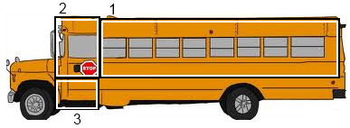
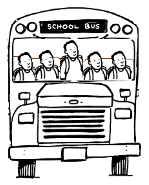

Assumptions: The engine is in the bus, and any storage compartments and filled. Also zero resources are available, ie dimensions of ping pong balls or bus.
Using my last experience of an average sized school bus and my own height as reference to make my best estimation on the total area of the bus. I will then estimate how many pingpong balls are in a cubic foot. It is easier to estimate on a smaller area than a larger one.
Split the insides of the bus in 3 sections. all the seating, the drivers section and the bottom steps. 
How long is the section 1 the seating area?
Using my height as a guide roughly 5'9, from my back to my knees is aprox 2 feet.
Last time I was on a school bus my knees hit the from of the seat so 2 feet plus half of a foot for the seat.
On average you can fit say 40 people on a school bus 2 people per seat, 2 seats per row. So 10 rows
If you take all the seat padding it would take up and estimate of .5 feet from top to bottom.
10 * 2.5 feet - .5 feet*10 pading

How heigh is the seating area?
6 foot hight so most people can stand, the taller peple could not
How wide is the bus.
a normal bus seats 4 per row and middle section, 1 person with a bit of space would be about 2 feet long. the middle part would be about 1 person wide so 5 * 2 = 10 feet.
Drivers Area
The drivers length is about 1.5 times the lenght of a seating area, but only has 1 side of seat.
The dirvers seat is usually bulkier so it would take the same about of space as 2
(2.5 - .5) * 1.5
Stairs Area
length: same as driver : 2.5 * 1.5 height: approx 4 feet width: 1/3 of bus of 10/3 = 3 divide by 2 for stairs estimate ((2.5* 1.5 )*3*3)/2
section 1) 1200 cubic feet
section 2) 180 cubic feet section 3) 16 cubic feet estimate how many ping pong balls is roughly 1.5 inches. so 8 pingpong per foot lenghts to 8*8*8 = 512 (1200 + 180 + 16)*512 =~ 715,000